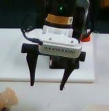
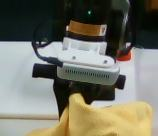
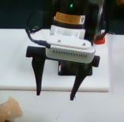
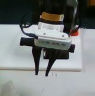

Accepted by IEEE Transactions on Robotics (T-RO), 2026
UniPred
An agentic approach to learning concepts from human
demonstrations
for long-horizon manipulation.
Unifying Deep Predicate Invention
with Pre-trained Foundation Models
* Equal contribution. † Corresponding author.
Carnegie Mellon · Michigan · Pittsburgh · Centaur AI · Princeton
Author affiliations
1 Robotics Institute, Carnegie Mellon University, Pittsburgh, PA, USA
2 Computer Science and Engineering Division, University of Michigan
3 Department of Computer Science, University of Pittsburgh
4 Centaur AI Institute
5 Department of Electrical and Computer Engineering, Princeton University
6 Department of Civil and Environmental Engineering, University of Michigan
From agent-guided learning to robot planning. Watch the proposal–learning–feedback loop, then a complete table-cleaning run: store the toys, pick up the towel, and wipe the table. All demonstrations ↓
Concept learning with an agent in the loop
The agent proposes. Demonstrations provide feedback. Concepts take shape.
Training · unified bilevel learning
01 Agent
Start with an LLM agent.
It proposes a concept and how actions change it.
Is the gripper empty?
HandEmpty(robot)
Pick→ not empty
Place→ empty
The proposal specifies action effects; the visual meaning is learned.
02 Demonstration
Learn from what changes.
Demonstrated transitions supervise the visual classifier.


No hand-labeled concept annotations are needed.
03 Feedback
Feedback makes it a loop.
The agent uses learning feedback to revise its next proposal.
Propose → learn → evaluate → revise. Repeat.
04 Concept
A concept the robot can recognize.
From a symbolic proposal to a visual predicate.
HandEmpty(robot)Is the gripper empty?


Learned predicates provide the facts a planner needs.
Observations from the paper. Candidate effects, feature motion, and predicate outputs illustrate the method.
Real-robot demonstrations
Two real-robot domains, 20 evaluation tasks, and 20 teleoperated demonstrations per domain. Every example is shown below; videos play while in view.
Table cleaning
Put every toy in the box, then remove the tabletop debris with a towel. The planner must satisfy clearing and reachability conditions before wiping.
Three toys
The robot transfers three toy vehicles to the box, then grasps the towel and wipes the tabletop. The complete sequence is shown.
3× recorded speedTwo toys
A second arrangement requires two toy transfers before the towel can be used to finish cleaning.
3× recorded speedCluttered retrieval
Retrieve the target snack packets into the box. Bottles can be picked up; obstructing containers may need to be repositioned to make targets accessible.
Light clutter
A more direct retrieval sequence with fewer obstructions around the targets.
4× recorded speedModerate clutter
The robot moves an obstructing bottle before retrieving the target packet.
4× recorded speedHeavy clutter
Several obstructions require preparatory rearrangements before target retrieval.
Failure recovery
Re-grounding the scene after each controller allows the robot to replan from the observed outcome. Here, missed grasps are followed by further attempts that recover the task.
Complete run with recovery
The table-cleaning task continues through unsuccessful manipulation attempts to completion.
3× recorded speedRetrying a toy grasp
The toy remains on the table after a missed pick. Further picking attempts recover the transfer.
3× recorded speedRetrying a towel grasp
The robot retries the towel grasp before proceeding to wipe the table.
3× recorded speedRemaining failure cases
Replanning depends on correct predicates and reliable motor skills. It cannot guarantee recovery from perception or execution errors.
Unsuccessful pick and place
The task remains unfinished. If a predicate misclassifies the resulting scene, the next controller may be inappropriate.
Failed object transfer
A valid high-level plan cannot guarantee a successful grasp or placement. Physical execution errors may persist across attempts.
Incomplete wiping
Towel contact and actuation can fail to produce the required clean-table state, even when the available skill is retried.
These are failure mechanisms discussed in the paper, rather than diagnoses from per-frame execution logs.
IEEE Transactions on Robotics · 2026
Paper
Method, experiments, ablations,
and what remains open.
Accepted by IEEE T-RO 2026 · 11 authors
Published arXiv version ↗
Abstract
Long-horizon robotic tasks are hard due to continuous state-action spaces and sparse feedback. Symbolic world models help by decomposing tasks into discrete predicates that capture object properties and relations. Existing methods learn predicates either top-down, by prompting foundation models without data grounding, or bottom-up, from demonstrations without high-level priors. We introduce UniPred, a bilevel learning framework that unifies both. UniPred uses large language models (LLMs) to propose predicate effect distributions that supervise neural predicate learning from low-level data, while learned feedback iteratively refines the LLM hypotheses. Leveraging strong visual foundation model features, UniPred learns robust predicate classifiers in cluttered scenes. We further propose a predicate evaluation method that supports symbolic models beyond STRIPS assumptions. Across five simulated and two real-robot domains, UniPred achieves 2–4× higher success rates than top-down methods and 3–4× faster learning than bottom-up approaches, advancing scalable and flexible symbolic world modeling for robotics.
Cite the arXiv preprint
Citation metadata below corresponds to the published arXiv version.
@misc{wang2025unifyingdeeppredicateinvention,
title={Unifying Deep Predicate Invention with Pre-trained Foundation Models},
author={Qianwei Wang and Bowen Li and Zhanpeng Luo and Yifan Xu and Alexander Gray and Tom Silver and Sebastian Scherer and Katia Sycara and Yaqi Xie},
year={2025},
eprint={2512.17992},
archivePrefix={arXiv},
primaryClass={cs.RO},
url={https://arxiv.org/abs/2512.17992}
}